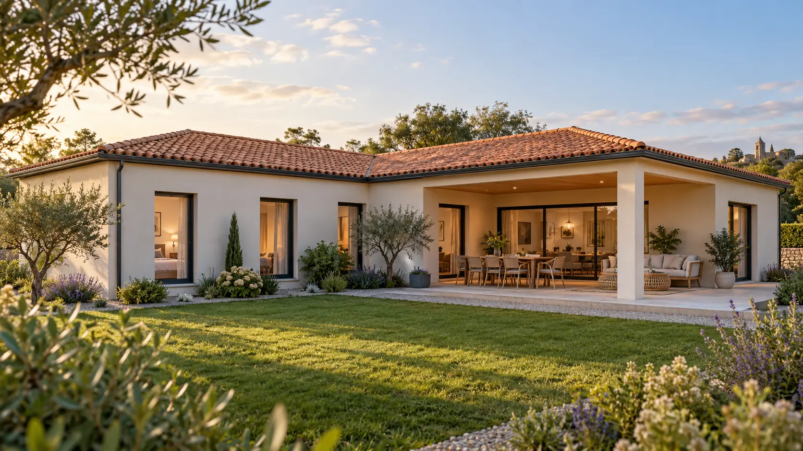

M130 Tradition
Architecture locale et plan en L
Une maison de plain-pied organisée autour d’une terrasse abritée, avec toiture deux ou quatre pans et façade enduite.
- Grande liberté d’adaptation au terrain.
- Garage et locaux techniques regroupés côté entrée.
- Réalisation traditionnelle ou préfabrication partielle.